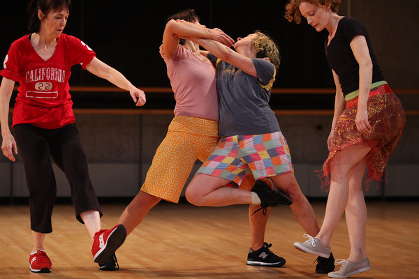
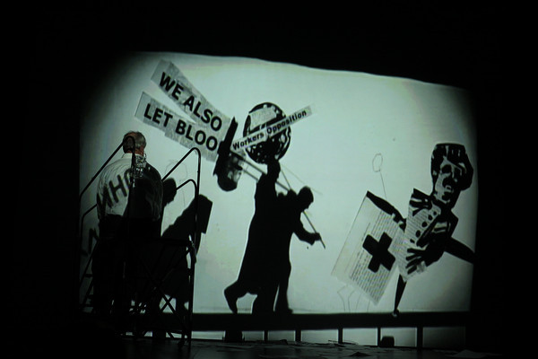
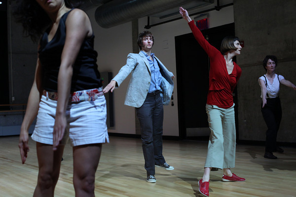
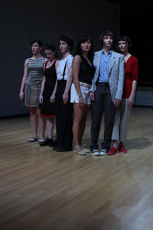
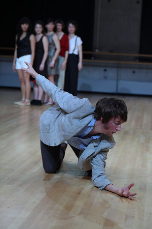

-
Hay and Rainer, After PERFORMA
by Hong-An Truong December 2, 2009
While performance is a term that has been grappled with at least since Aristotle, our particular age seems obsessed with ‘performativity’ or the ‘performative,’ concepts that have become almost ubiquitous across multiple discourses. These terms are useful precisely because of their interdisciplinarity: they speak evocatively to intersecting issues like gender, language, and repetition. But they are also slippery terms that we happily overuse – a seductive calling for the return to live performance – and perhaps lived experience – itself. PERFORMA seems to be the quintessential example of this giddy indulgence.
We are thrilled to have such a relentlessly frenetic and delirious display of performance-related events thrown at us, and there’s a vital risk-taking in much of what we have experienced. If you are a contemporary artist who doesn’t dabble in performance, or the performative, or performativity (see, there it goes a-slipping), it seems that, well, you’re not very contemporary. Everyone from Wangechi Mutu to William Kentridge played their part in the festivities this year, all to much interest but with varying degrees of success. Now that the final curtain on PERFORMA has been lowered, and the visceral excitement has burned off, we are left with vague feelings of disappointment. In the cooling embers of what remains, Why performance? is the question that arises.
I wonder at this need for immediate encounters between the body and the event and the seeming, sudden relevancy of live performance. I suspect it has something to do with the widespread degradation of experience enacted by a surfeit of images, insufficient against ongoing war and economic crises. I recall the numerous PERFORMA events I have attended over the last few weeks, and struggle to regain the memory of these experiences. Some have grabbed hold, while others have receded, but in all cases some trace of being there remains. Performance, after all, is about the presence of the body, and not just the performers’ bodies, but also our own.
Often, when performance doesn’t succeed, it is due to a failure of the artist to fully consider the relationship between the body, its representation, and its relationship to the audience. Performance is riddled with problems around power and authority, and when that power is unquestioned, normative modes of performer/spectator relations reign, passivity overcomes us, and the time of event (our conscious presence in that moment) is lost. How we feel, and read the body is the essence of our encounter. These responses determine our ability to transcend the specific actions on stage and inhabit a time constitutive of the event’s fullness, a practice of “being in the event.”
Yvonne Rainer and Deborah Hay’s recent double-billed performance at the Baryshnikov Arts Center, as part of PERFORMA 09, provided an intensive reminder of this practice. That it should be these two that did so is no surprise. Legendary figures in the postmodern dance movement and founding members of the Judson Dance Theater, an informal group of dancers who performed at the Judson Memorial Church in New York between 1962 and 1964, Rainer and Hay came out of a period of intense experimentation. They rejected modern dance composition and championed everyday body movements. Both choreographers challenged the traditionally narcissistic and voyeuristic structure of dance by shattering the privileged position of the virtuosic dancer. Instead, postmodern dance put anybody and everybody on stage, forging a new relationship between performer and spectator, and denying the performance as spectacle.
Heavy traces of these avant-garde dance elements can be found in Rainer and Hay’s latest works at PERFORMA, two dances that reveal their shared intellectual heritage but also re-activates the body as central to performance.
Hay’s If I Sing to You begins with its five women performers standing awkwardly pressed together and softly but nervously humming or chattering to themselves. Some of the performers sport patchy facial hair appliqué, confusing gender altogether. The next hour finds the women engaged in entrancing activities like wrestling, scampering around on tiptoe, wildly embracing each other, barking, humping on the floor, shaking, and crawling. At times, the dancers seem utterly alone, and at other times, inescapably together. Always absurd, their bodily transactions are fiendish and giddy, sexual and child-like, vulgar and simple, an unfettered release that is both confounding and exhilarating.
Hay’s choreography depends heavily on her individual dancers, and the five performers (Michelle Boulé, Jeanine Durning, Catherine Legrand, Amelia Reeber, and Ros Warby) deliver. Their adroit bodies – most notably Boulé’s strangely magical naïveté – opened up an uncanny space between experience and consciousness. It was a raw, uncomfortable familiarity, too mesmerizing to let go, and, given the intimate space of the Center, it forced a tense physical and psychical proximity that prevented us from forgetting our own presence.
The dancers’ queer movements and nonsensical gibberish, all dictated by a sense of jouissance, reflect the unintelligible, undisciplined body hovering dangerously at the edge of pre-linguistic consciousness. Clearly transacting emotions within themselves, to each other, and to us, If I Sing to You is about the body coming into language, and all the gender disciplining (bodily or otherwise) that goes along with it. And through our kinetic familiarity with the performers’ everyday actions, the performer / spectator binary is recast, our subjectivities splayed out as raw as the bodies thrusting in front of us.
Language and the body are equally important to the always-playful Rainer. In her New York premiere of Spiraling Down, Rainer finds her bodily language in an mélange of historical and contemporary sources, such as old movies, the comedic movements of Steve Martin and Sarah Bernhardt, ballroom dance, and in sports like fencing and soccer. Her repurposed texts come from newspapers and novels, including Haruku Murakami.
Spiraling Down begins with Rainer speaking Murakami’s words in a disembodied narrative that equates the seemingly dissimilar activities of writing with running. Murakami’s text frames the dance (and perhaps all of what dance and performance could be) as an intellectual exercise, one that makes connections between the body and the brain, calling attention to the textual capacities of the body. The body, as performed by Rainer, is not simply something that can carry content (choreographed movement or otherwise), but is also dense with meaning (social or otherwise).
Like Hay’s cast of performers, Rainer’s unofficial, multi-generational dance troupe, which includes Pat Catterson, Emily Coates, Patricia Hoffbauer, and Sally Silvers, consists of all women. And while they are all clearly women, they seem gendered otherwise somehow, rendered strange through their unfamiliar presence on stage set against their everyday appearance. The dancers’ variously aged bodies, lacking the pretension of virtuosity, force us to recognize the mediated aspects of performance.
The dance ruminates on different subjects, from war and technology to impotence and soccer. It’s a pastiche of movement and language that jumps haphazardly between texts both physical and linguistic, producing a stage time that is neither linear nor narrative. This melancholic fragmentation calls attention to each dancer’s bodily relationship to the time of the event itself and to temporality more broadly, creating a kind of embodied ‘present’ that is difficult to escape.
There are elements of chance and improvisation implicit to the structure of both Hay and Rainer’s choreography that create a palpable tension and anticipation. Hay allows each dancer to choose her costume, which determines her gender, right before each performance, which then affects both the staging and the solo elements. Rainer choreographed set movements, which the dancers can choose to perform according to their own timing.
Through the vocabulary of postmodern dance drawing on pedestrian movements, fragmentation, and juxtaposition, Hay and Rainer remind us of the mutability of the body and the self. We witness the body’s domestication and struggle against the memory of our own. And if we understand dance, as event, already in the process of becoming a memory, Hay and Rainer make us painfully aware of our fragile relationship to time. Unlike the slapped-together sloppiness of much that gets peddled under the name of performance, events such as Hay and Rainer’s dances prompt us to recognize that performance has form, structure, history, and, well, an audience. In now recalling their dance performances, which happened less than two weeks ago, my memory of it exceeds the event, seeping into embodiment and my physical sense of being there.
Perhaps PERFORMA’s current relevancy and our recent energetic turn to performance is connected to the valorization of the 60s and 70s in the history of contemporary art. It is worth recalling that those radical shifts in performance and dance took place at a similar moment of national aggression, then in Southeast Asia. Consider also the continued resonance of The Society of the Spectacle, published by Guy Debord in 1968, whose depiction of a certain modernity, drained of all directly lived experience, has yet to be supplanted. Indeed, amidst our current moment of war and economic upheaval, our desire to remember, and to engage with each other at levels beyond the limits of the spectacle seems all the more understandable.
Performance – with its implicit continuity and unique temporality – bears an unavoidable relationship to the present. In the packed crowds at PERFORMA, as bodies heated up against bodes in many spaces, this alliance can be felt. Unlike Chelsea openings that feel more like awful holiday store crowds, live performance gives us the feeling that we are part of something. We feel the transaction between the performer and ourselves, and, when it is good, it pricks us, a kind of punctum that reminds us that we are here. Even if the sharing of space, of consciousness, is not altogether genuine, it can at least gesture towards the fantastic possibility that our memory will not fail us.

{kind=link}
{kind=link}
{kind=link}
{kind=link}
{kind=link}
{kind=link}